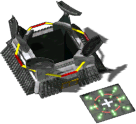
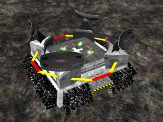

Helipad


In-game info panel
- Power required:
- 500
- Energy (HP):
- 2000
- Build time:
- 36 s?
- Units storage:
- 50
Costs: Extract 1000 Iron 600 Carbon 500 Titanium 300
Description
An air-force strategic structure designed for the service and repair of all types of helicopters. Unlike the ground force barracks and garages, the helipad need not have free space around it in order to send out helicopters.
Related
- Requires
- Pioneer, Heavy Factory
Config values not shown in game (9)
SIGHT- 8
BUILDER- 50
TRACE- 2
HEIGHT- 1
COMPONENT_QUANT- 3
SPRITE_QUANTITY- 4
TYPE- R_hKOSZARYh
AIBLD- AIBLD_HELIPAD
AREA- 1, 1, 1, 0, 0, 0, 0, 0, 0, 0, 1, 1, 1, 0, 0, 0, 0, 0, 0, 0, 1, 1, 1, 0, 0, 0, 0, 0, 0, 0, 0, 0, 0, 0, 0, 0, 0, 0, 0, 0, 0, 0, 0, 0, 0, 0, 0, 0, 0, 0, 0, 0, 0, 0, 0, 0, 0, 0, 0, 0, 0, 0, 0, 0, 0, 0, 0, 0, 0, 0, 0, 0, 0, 0, 0, 0, 0, 0, 0, 0, 0, 0, 0, 0, 0, 0, 0, 0, 0, 0, 0, 0, 0, 0, 0, 0, 0, 0, 0, 0